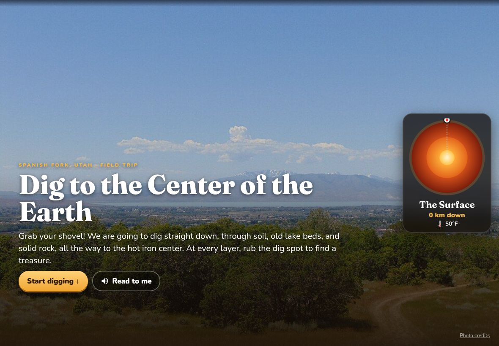
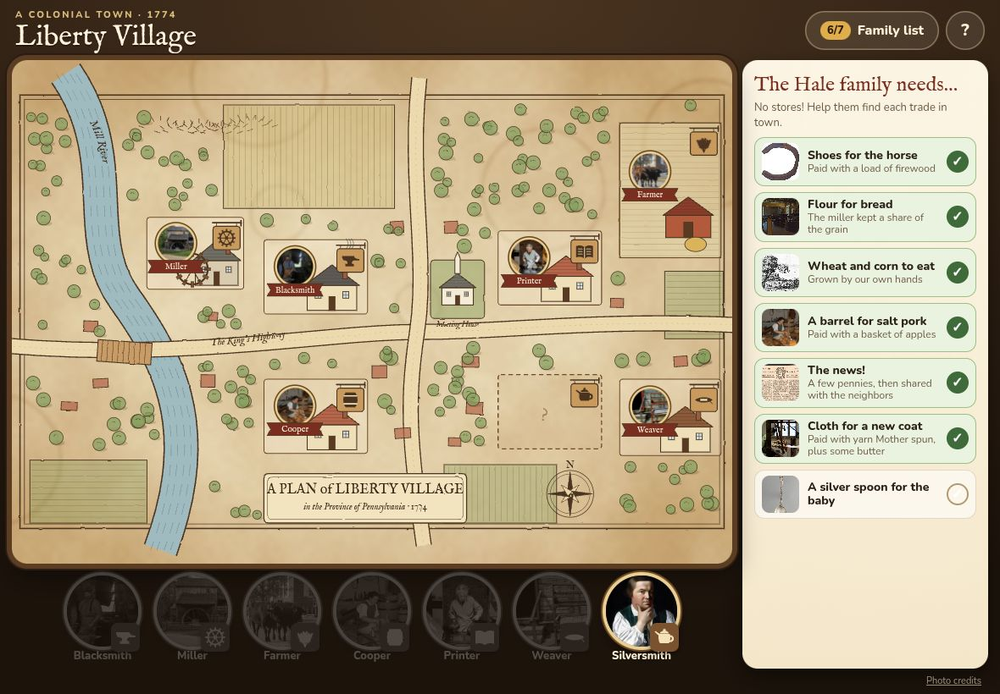
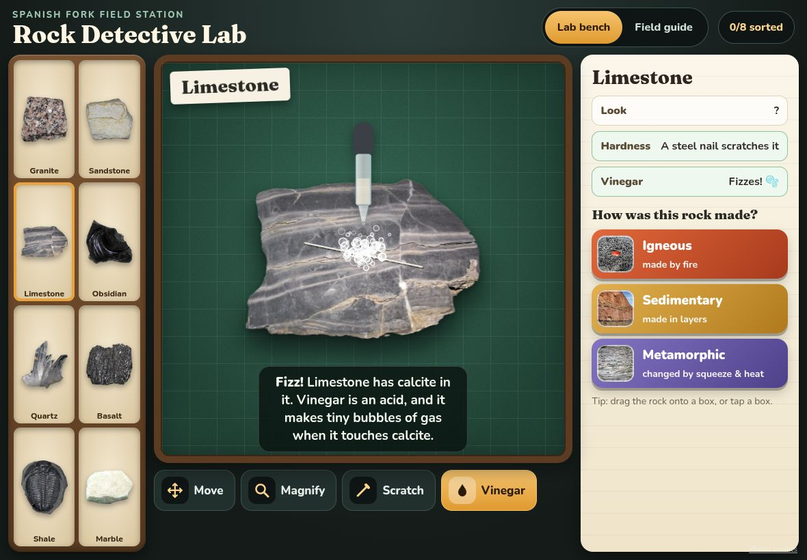
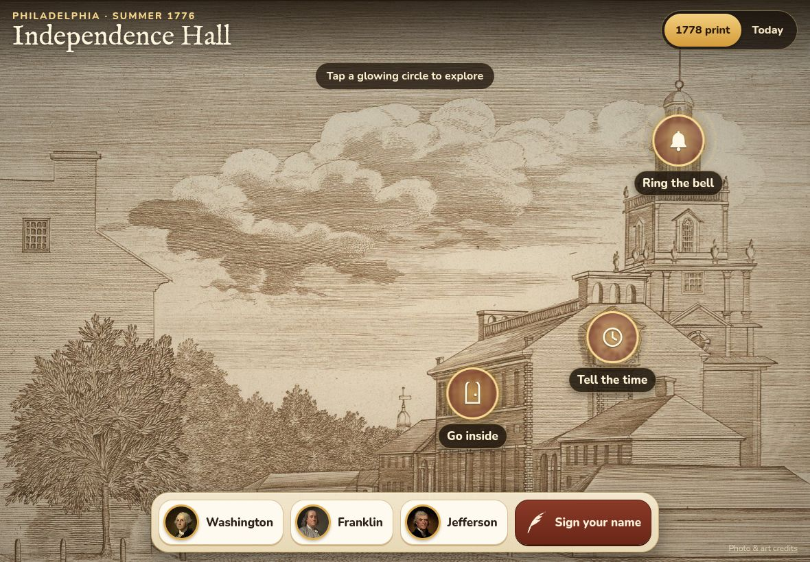
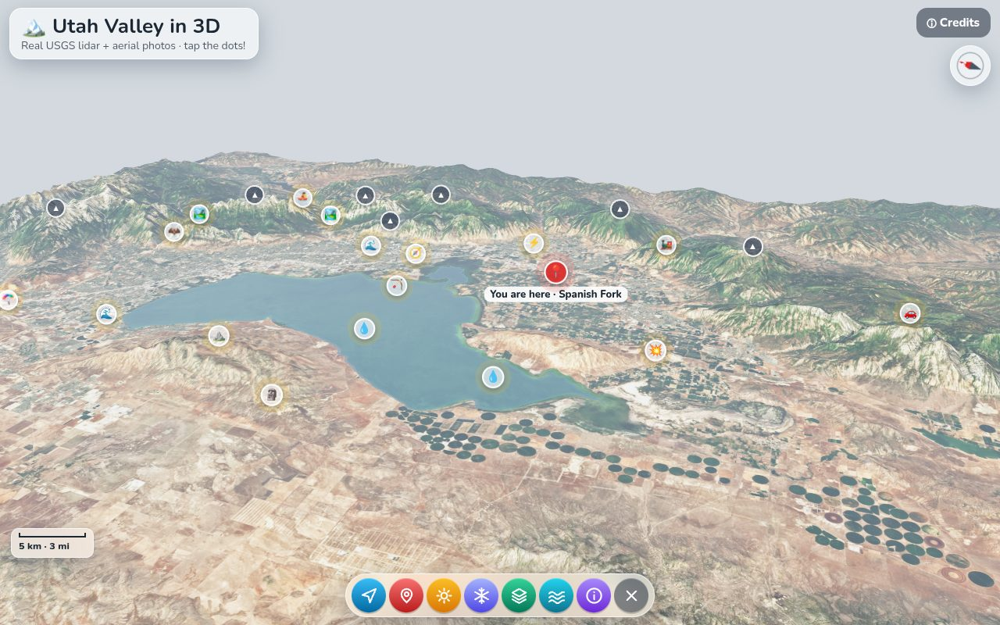
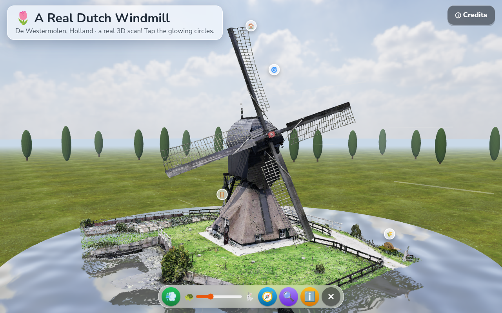

Swipe down from a Utah canyon through soil, fossils, bedrock, crust and mantle to the iron core, finding something at every layer.

Drag the blacksmith, printer, Paul Revere the silversmith, cooper, farmer, miller and weaver to their shops on an old-style village map and learn how families got by without stores.

Eight real Utah rocks to test like a geologist: magnify, scratch, drip vinegar, then sort them into igneous, sedimentary and metamorphic. Includes a Utah rock-hunt field guide.

Step into 1776 Philadelphia: ring the Liberty Bell, peek into the Assembly Room, meet Washington, Franklin and Jefferson, and sign your name with a quill next to John Hancock.

Real USGS lidar elevation and aerial photos of the mountains around Spanish Fork. Fly to Timpanogos and Nebo, change the seasons, and flood the valley with ancient Lake Bonneville!

Explore a real 3D scan of De Westermolen in Holland. Turn on the wind, turn the mill to face it, and peek inside!
November apps: photos are public domain or Creative Commons; each app lists its credits under "Photo credits". Utah Valley: USGS 3DEP (public domain), Sentinel-2 cloudless by EOX (CC BY-NC-SA 4.0). 3D scans CC BY 4.0 — see Credits in each page and the README.